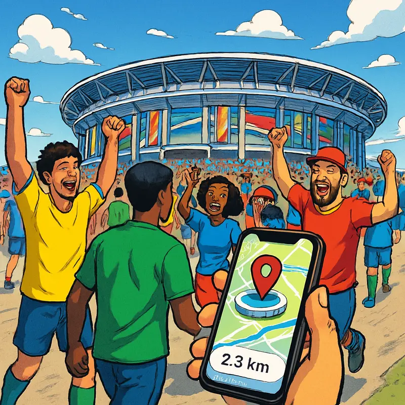

دليلك الشخصي لأيام المباريات في بطولة كرة القدم 2026.
يضع WC26 Travel Companion بين يديك جميع المباريات الـ104، والـ16 ملعبًا في 3 دول، وخرائط GPS للملاعب، وجداول الأيام الزمنية، وأدوات السفر الأساسية — ويعمل كليًا دون اتصال وبدون جمع أي بيانات.
معاينة التطبيق
صُمّم لكل خطوة في يوم مباراتك
من التخطيط في المنزل إلى التنقل في مدينة أجنبية يوم المباراة — شاهد كيف يستخدم التطبيق مشجعون حقيقيون.



كل ما تحتاجه، ولا شيء زائد
ثماني أدوات مخصّصة ليوم المباراة — بلا خلاصات اجتماعية وبلا إعلانات وبلا حسابات.
🏟️ جدول المباريات الكامل
جميع المباريات الـ104 — 72 في دور المجموعات و32 في الأدوار الإقصائية — مع الملاعب الحقيقية والتواريخ ومواعيد الانطلاق في الولايات المتحدة والمكسيك وكندا.
📋 جدول يوم المباراة الشخصي
أضف تذاكرك مع البوابة والقطاع ومقعدك، واحصل على جدول خطوة بخطوة يخبرك متى تنطلق ومتى تصل ومتى تدخل الملعب.
🔔 تذكيرات ذكية بالمباريات
إشعارات محلية تلقائية — قبل يوم واحد وقبل ساعتين من الانطلاق. تُجدول على الجهاز نفسه دون حاجة إلى خادم.
📍 محدّد الملاعب عبر GPS
تستخدم ميزة «بالقرب مني» نظام GPS في جهازك لإظهار موقعك الحالي بجوار الملاعب الـ16 على خريطة MapKit تفاعلية مع مسافات لحظية.
🚫 دليل المواد المحظورة
قائمة مصنّفة للمواد الممنوعة والمسموح بها عند تفتيش الملاعب — راجعها قبل تجهيز حقيبتك لا عند البوابة.
🆘 أرقام الطوارئ
أرقام الشرطة والمستشفيات والقنصليات مرتّبة حسب كل مدن الاستضافة الـ16 في ثلاث دول. على بعد لمسة واحدة.
💱 العملات والإكراميات
مرجع سريع للدولار الأمريكي والكندي والبيزو المكسيكي مع عادات الإكراميات المحلية — ضروري عند عبور الحدود بين الدول المضيفة.
🗣️ عبارات يوم المباراة
عبارات إسبانية أساسية لأماكن مكسيكو سيتي وغوادالاخارا ومونتيري — النقل والطعام والملعب والطوارئ مع النطق.
كيف يعمل
خمس خطوات من التنزيل إلى يوم المباراة.
يعمل كليًا دون اتصال
شبكة Wi-Fi في الملاعب غير موثوقة، والتجوال الدولي مكلف. لهذا تعمل كل ميزات WC26 Travel Companion دون أي اتصال بالإنترنت. الجداول والخرائط والجداول الزمنية وأرقام الطوارئ ومعلومات العملات والعبارات كلها مضمّنة في التطبيق. وتُخزَّن بيانات مبارياتك محليًا على جهازك عبر إطار SwiftData من آبل. بلا حساب، بلا إعلانات، بلا تتبع، ولا تخرج أي بيانات من هاتفك.
الأسئلة الشائعة
هل يتطلب التطبيق اتصالاً بالإنترنت؟
لا. جميع الجداول وبيانات الملاعب والخرائط والأدوات تعمل دون اتصال بالكامل. وتستخدم ميزات الموقع GPS الجهاز فقط.
هل يجمع التطبيق أي بيانات شخصية؟
لا. لا يجمع أي بيانات. راجع سياسة الخصوصية.
وماذا عن بيانات الموقع؟
تُعالج بيانات الموقع على الجهاز فقط لإظهار موقعك على الخريطة، ولا تُسجَّل أو تُرسل إلى أي مكان أبدًا.
هل مواعيد المباريات بتوقيتي المحلي؟
نعم. تُخزَّن جميع مواعيد الانطلاق كأزمنة UTC مطلقة وتُعرض تلقائيًا بالتوقيت الحالي لجهازك.
هل يمكنني إيقاف الإشعارات؟
نعم. يمكنك رفض إذن الإشعارات عند الطلب، أو تعطيله لاحقًا من إعدادات iOS ← WC26 Travel Companion ← الإشعارات.
ما إصدار iOS المطلوب؟
iOS 17.0 أو أحدث. بُني التطبيق بـ SwiftUI وSwiftData وMapKit وCoreLocation وUserNotifications — جميعها أطر آبل الأصلية.
كيف أتواصل مع الدعم؟
راسلنا على wangning.engineer@outlook.com. وقت الاستجابة المعتاد من 24 إلى 48 ساعة.
احصل على التطبيق
WC26 Travel Companion متاح على App Store لآيفون وآيباد.